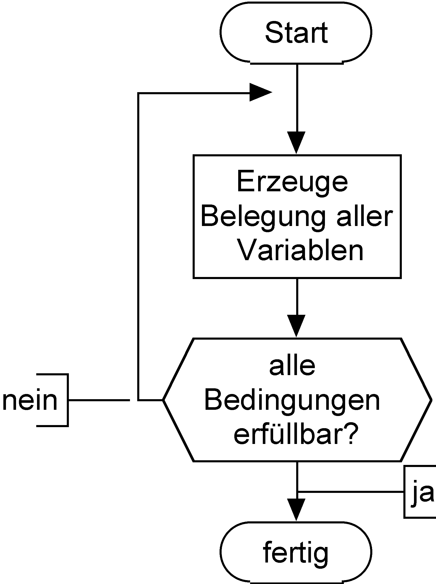
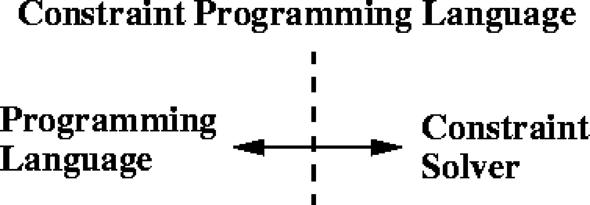

Constraint-Programmierung – Grundlagen
Programmierparadigmen
Begriffe
Einschränkung (constraint)
- Eine Einschränkung (constraint) stellt eine Beziehung zwischen verschiedenen Unbekannten (Variablen) her. Jede Variable kann Werte aus einem gegebenen Wertebereich (domain) annehmen.
- Eine Einschränkung beschreibt ggs Wissen über die Werte der Variablen.
- Eine Einschränkung beschreibt, welche Beziehung gelten muss, ohne eine Berechnungsprozedur dafür anzugeben, wie die Einhaltung der Beziehung erzwungen werden kann.
- Beispiel aus dem täglichen Leben: Terminabsprachen
Erfüllbarkeit (satisfiability)
- erfüllbar:
- Es existiert eine Lösung für die Einschränkungen.
- nicht erfüllbar:
- Es existiert keine Lösung für die Einschränkungen.
| \(X \leq 3 \wedge Y = X + 1\) | erfüllbar |
| \(X \leq 3 \wedge Y = X + 1 \wedge Y \geq 6\) | nicht erfüllbar |
Lösungsverfahren
- Zwei Lösungsstrategien
- constraint satisfaction
- constraint solving
- Constraint-satisfaction behandelt Probleme über endlichen Wertemengen. Schätzungsweise mehr als 95% aller industriellen CP-Anwendungen benutzen endliche Domänen.
- Constraint-solving behandelt Probleme über nicht endlichen Wertebereichen. Vgl. z.B. den Fahrenheit-Celsius-Konverter.
- Während beim Constraint-satisfaction kombinatorische Methoden zum Einsatz kommen, werden beim Constraint-solving mathematisch-analytische Verfahren benutzt (Differentiation, Integration, Taylor-Reihen etc.).
Constraint-satisfaction
Prinzip
Ein Constraint-satisfaction-Problem (CSP) wird folgendermaßen definiert:
- eine Menge von Variables \(X=\{x_{1},...,x_{n}\}\),
- für jede Variable \(x_{i}\), eine endliche Menge \(D_{i}\) möglicher Werte (Domäne)
- eine Menge von Einschränkungen (constraints), die Werte, die die Variablen gleichzeitig annehmen können, einschränken
Beispiel: \[X=\{1,2\}, Y=\{1,2\}, Z=\{1,2\}\] \[X = Y, X \neq Z, Y > Z\]
Lösung eines CSP: Belegung jeder Variablen mit einem Wert aus ihrer Menge, so dass alle Einschränkungen erfüllt sind.
Beispiel: \[X=2, Y=2, Z=1\]
Systematische Suche
- Grundsätzlich kann ein CSP durch systematisches Durchsuchen des Lösungsraums gelöst werden.
- Ein solches Verfahren ist simpel aber ineffizient.
- Zwei Varianten:
- Generate & Test (GT): Eine Belegung aller Variablen wird erzeugt und geprüft.
- Backtracking (BT): Schrittweise Erweiterung korrekter Teillösungen zur Gesamtlösung.

Generate & Test
- Grundlegendes Verfahren zur Lösung von CSPs
- Algorithmus:

Nachteile:
- dummer Generator
- Nichterfüllbarkeit wird spät erkannt.
Backtracking
- Partielle Lösung wird schrittweise zur vollständigen erweitert.
- Algorithmus (vereinfacht):


- Nachteile:
- thrashing, d.h. wiederholte Fehlbelegung
- Nichterfüllbarkeit wird spät erkannt.
Anwendungsbeispiel für GT und BT
Aufgabenstellung: \[X=\{1,2\}, Y=\{1,2\}, Z=\{1,2\}\] \[X = Y, X \neq Z, Y > Z\]
Generate & Test
| X | Y | Z | Prüfung |
|---|---|---|---|
| 1 | 1 | 1 | fehlgeschlagen |
| 1 | 1 | 2 | fehlgeschlagen |
| 1 | 2 | 1 | fehlgeschlagen |
| 1 | 2 | 2 | fehlgeschlagen |
| 2 | 1 | 1 | fehlgeschlagen |
| 2 | 1 | 2 | fehlgeschlagen |
| 2 | 2 | 1 | erfüllt |
Backtracking
| X | Y | Z | Prüfung |
|---|---|---|---|
| 1 | 1 | 1 | fehlgeschlagen |
| 2 | fehlgeschlagen | ||
| 2 | fehlgeschlagen | ||
| 2 | 1 | fehlgeschlagen | |
| 2 | 1 | erfüllt |
Optimierungen der systematischen Suche
- Grundidee: Entfernung von inkonsistenten Werten aus der Wertemenge einer Variablen
- Repräsentation von binären und unären Einschränkungen durch Graphen:
- Knoten
- Variablen
- Kanten
- Einschränkungen
- Prüfung der
- Knotenkonsistenz (Entfernung von Werten im Widerspruch zu unären Einschränkungen)
- Kantenkonsistenz (dito für binäre Einschränkungen)
- Pfadkonsistenz

- Optimierung der Suche nach wie vor Forschungsgegenstand
Implementierung
Sprachschnittstellen
- Benutzung einer Bibliothek, die Gleichungen, Variablen etc. implementiert, in einer Wirtssprache
- Benutzung einer Sprache mit erweiterter Semantik: Variablen können zu anderen in Beziehung gesetzt werden und unbestimmete Werte enthalten.

Anforderungen an CP-Sprachen
- Es muss ein Constraint-solver zur Verfügung stehen, der Gleichungen löst bzw. ihre Unlösbarkeit mitteilt.
- Sprachmittel für die Formulierung von Gleichungen, Formeln etc.
- Eine Schnittstelle zum Constraint-solver, die es erlaubt, Einschränkungen zu übermitteln und Lösungen entgegen zu nehmen.
Beispiel: Send more money
Mehr Geld bitte!
Sie senden einen Brief an Ihre Eltern mit dem Inhalt:
SEND
+MORE
-----
MONEY
Wieviel Geld erhalten Sie?
Die Aufgabe besteht darin, jedem Buchstaben aus \(\{S,E,N,D,M,O,R,Y\}\) eine unterschiedliche Ziffer aus \(\{0,...,9\}\) zuzuordnen, so dass die Gleichung \[SEND+MORE=MONEY\] erfüllt wird.
Aufgabe: Lösen Sie das Problem in einer Programmiersprache Ihrer Wahl! Beachten Sie Nebenbedingungen.
Lösungsansatz: „Rohe Gewalt“
- Alles durchprobieren!
- Man braucht 8 ineinander geschachtelte Schleifen.
- Achtung: Acht Variablen (
S,E,N,D,M,O,R,Y) können zehn verschiedene Werte annehmen. Ergibt \(10^{8}\) Möglichkeiten. - Allerdings verringern einschränkende Bedingungen die Zahl der Möglichkeiten:
SundMdürfen nicht \(0\) sein.- Da
Mals Übertrag entsteht, kannMnur \(1\) sein. - Die Werte der Variablen müssen paarweise verschieden sein.
- Weitere logische Überlegungen über Zusammenhänge zwischen den Ziffern können das Verfahren beschleunigen (s. u.).
- Lösung z. B. in Smalltalk:
| z1 z2 z3 used | used := Set new. 1 to: 9 do: [:s | used add: s. 0 to: 9 do: [:e | (used includes: e) ifFalse: [ used add: e. 0 to: 9 do: [:n | (used includes: n) ifFalse: [ used add: n. 0 to: 9 do: [:d | (used includes: d) ifFalse: [ used add: d. 1 to: 1 do: [:m | (used includes: m) ifFalse: [ used add: m. 0 to: 9 do: [:o | (used includes: o) ifFalse: [ used add: o. 0 to: 9 do: [:r | (used includes: r) ifFalse: [ used add: r. 0 to: 9 do: [:y | (used includes: y) ifFalse: [ z1 := 1000 * s + (100 * e) + (10 * n) + d. z2 := 1000 * m + (100 * o) + (10 * r) + e. z3 := 10000 * m + (1000 * o) + (100 * n) + (10 * e) + y. z1 + z2 = z3 ifTrue: [ Transcript show: ' ',z1 printString; cr; show: '+',z2 printString; cr; show: '---------';cr; show: z3 printString; cr]]]. used remove: r ]]. used remove:o ]]. used remove: m ]]. used remove: d]]. used remove: n]]. used remove: e]]. used remove:s].
Lösungsansatz: Constraint Satisfaction
- Einfaches Modell durch Spezifikation der folgenden Gleichung als Einschränkung: \[1000*S+100*E+10*N+D \] \[+ 1000*M+100*O+10*R+E \] \[= 10000*M+1000*O+100*N+10*E+Y\]
- Den Variablen \(E, N, D, O, R, Y\) wird die Domäne \(\{0 \ldots 9\}\), der Variablen \(S\) die Domäne \(\{1 \ldots 9\}\) und \(M\) die Domäne \(\{1\}\) zugeordnet.
- Außerdem muss die Einschränkung \(all\_different([S,E,N,D,M,O,R,Y])\) hinzugefügt werden.
- Das Modell ist nicht effizient, weil alle Variablen bis auf eine schon belegt sein müssen, bevor die „Haupteinschränkung” geprüft werden kann.
Verfeinertes CSP-Modell
Nutzung der Überträge der Addition für die Zerlegung der „großen“ Einschränkung in mehrere kleine:
\begin{eqnarray*} E+D & = & Y+10*C1 \\ C1+N+R & = & E+10*C2 \\ C2+E+O & = & N+10*C3 \\ C3+S+M & = & 10*M+O \end{eqnarray*}Die Domänen der Variablen:
\begin{eqnarray*} E,N,D,O,R,Y & := & \{0,\ldots,9\} \\ S & := & \{1,\ldots,9\} \\ M & := & \{1\} \\ C1,C2,C3 & := & \{0,1\} \end{eqnarray*}- Die „kleinen“ Einschränkungen werden während der Belegungsphase früher geprüft und damit inkonsistente Belegungen ausgesondert.
(Naive) Implementierung in Prolog
select(X, [X|R], R). select(X, [Y|Xs], [Y|Ys]):- select(X, Xs, Ys). assign_digits([], _List). assign_digits([D|Ds], List):- select(D, List, NewList), assign_digits(Ds, NewList). smm :- X = [S,E,N,D,M,O,R,Y], Digits = [0,1,2,3,4,5,6,7,8,9], assign_digits(X, Digits), M = 1, S > 0, 1000*S + 100*E + 10*N + D + 1000*M + 100*O + 10*R + E =:= 10000*M + 1000*O + 100*N + 10*E + Y, write(X).
Implementierung in C++ (ILOG Solver)
#include <ilsolver/ctint.h> CtInt dummy = CtInit(); CtIntVar S(1, 9), E(0, 9), N(0, 9), D(0, 9), M(1, 9), O(0, 9), R(0, 9), Y(0, 9); CtIntVar* AllVars[]= {&S, &E, &N, &D, &M, &O, &R, &Y}; int main(int, char**) { CtAllNeq(8, AllVars); CtEq( 1000*S + 100*E + 10*N + D + 1000*M + 100*O + 10*R + E, 10000*M + 1000*O + 100*N + 10*E + Y); CtSolve(CtGenerate(8, AllVars)); PrintSol(CtInt, AllVars); CtEnd(); return 0; }
Constraint Logic Programming (CLP)
Vorbemerkungen
- Marriot: Programming with Constraints:
- CLP vs. LP: unification wird ersetzt durch test for constraint satisfaction (S. 5)
- cKanren-Artikel:
- Traditional logic programming provides only a single constraint: equality over terms, which is implemented using unification.
- Constraint logic programming supports additional constraints, such as constraints over finite domains CLP(FD) and tree terms CLP(Tree).
- What is Constraint (Logic) Programming?
- Analyzing the problem to solve, in order to understand clearly which are its parts;
- determining which conditions/relationships hold among those parts: these relationships and conditions are key to the solving, for they will be used to model the problem;
- stating such conditions/relationships as equations; to achieve this step not only the right variables and relationships must be chosen: as we will see, C(L)P usually offers a series of different constraint systems, some of which are better suited than others for a given task;
- setting up these equations and solving them to produce a solution; this is usually transparent to the user, because the language itself has built-in solvers.
Typical Applications and Approaches share some general characteristics:
- No general, efficient algorithms exist (NP-completeness): specific techniques / heuristics must be used. These are usually problems with a heavy combinatorial part, and enumerating solutions is often impractical altogether. A fast program using usual programming paradigms is often too hard and complicated to produce, and normally it is so tied to the particular problem that adapting it to a related problem is not easy.
- The problem specification has a dynamic component: it should be easy to change programs rapidly to adapt. This has points in common with the previous item: C(L)P tools have builtin algorithms which have been tuned to show good behavior in a variety of scenarios, so updating the program to new conditions amounts to changing the setting up of the equations.
- Decision support required: either automatically in the program or in cooperation with the user. Many decisions can be encoded in mathematical formulae, which appear as rules and which are handled by the internal solvers, so (although, of course, not always) there is no need to program explicit decision trees.
Among the applications with these characteristics, the following may be cited: planning, scheduling, resource allocation, logistics, circuit design and verification, finite state machines, financial decision making, transportation, spatial databases, etc.
Ein CLP-Beispiel: Mortgage nach Fruehwirth2010
- D:
- Amount of Loan, Debt, Principal
- T:
- Duration of loan in months
- I:
- Interest rate per month
- R:
- Rate of payments per month
- S:
- Balance of debt after T
mortgage(D, T, I, R, S) <=> T = 0, D = S ; T > 0, T1 = T - 1, D1 = D + D*I - R, mortgage(D1, T1, I, R, S).
mortgage(D, T, I, R, S) <=> T = 0, D = S ; T > 0, T1 = T - 1, D1 = D + D*I - R, mortgage(D1, T1, I, R, S).
mortgage(100000,360,0.01,1025,S)yieldsS=12625.90).mortgage(D,360,0.01,1025,0)yieldsD=99648.79.mortgage(100000,T,0.01,1025,S), S=<0yieldsT=374, S=-807.mortgage(D,360,0.01,R,0)yieldsR=0.0102861198*D.
Notizen
- Constraint-Programming Language Interfaces sollte noch zitiert werden, wg. Bilderverwendung in …
- ebenso die Beispiele
- How Does a CLP System Work? eventuell als Einstiegsbeispiel in Lösungsverfahren verwenden
Literatur
Hier verwendete und weiterführende Literatur: